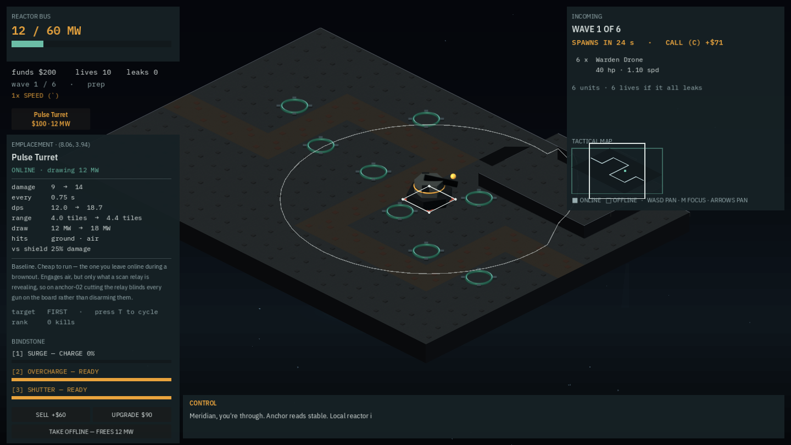
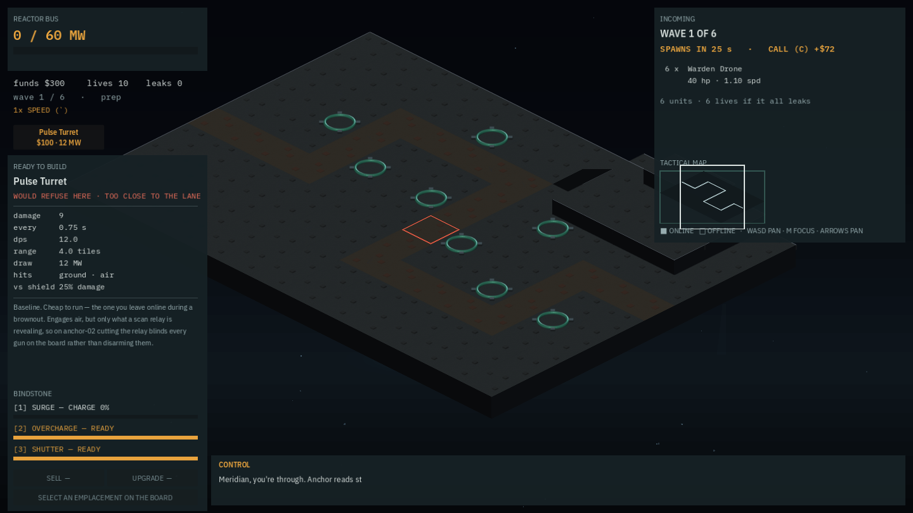

Pillar 2 is true in the running game
PLC-06 gives the board a free, continuous cursor and closes out the loop PLC-01/PLC-02 opened: an emplacement carries a real float position and a real legality rule, but until now the mouse rounded to the nearest integer and every keyboard/gamepad step walked a fixed slot graph, so neither could ever be reached in play. A pulse-turret now builds at (8.06, 3.94) — not one of anchor-01's eight authored slots. The best part of the change is a removal: a lane magnet was built, played, and taken back out because it measurably fought the player.
Pillar 2 of the PRD is true in the running game. Build where you want — no slots. Three pieces landed across this workstream, and the first two could not be felt at all: PLC-01 gave an emplacement float64 x/y instead of an integer slot (parity 1440 identical). PLC-02 made legality a real rule — bounds, lane standoff, overlap — proved with 48,837 sampled positions matching between both engines. Neither changed what a player could do, because PLC-06 (issue #34), the cursor, was the piece still missing: hovered_slot = Vector2i(roundi(t.x), roundi(t.y)) rounded the mouse before anything downstream ever saw it, and keyboard/gamepad input walked a fixed slot graph. The rule was correct and unreachable.

The motivation is not aesthetic. LF-176 was the owner reporting that most turrets could barely reach anything. Decision 074 measured it and found the residual is slot geometry, not range: sweeping pulse-turret's range from 3.2 to 7.0, more than double what shipped, left p10 coverage pinned at literally 0.0%. No amount of tuning reaches a pad that is too far from the lane — the pads themselves were the ceiling. Free placement is the fix; this commit is what makes it reachable rather than theoretical.
The best thing in it is a removal
The spec called for a lane magnet: nudge the cursor toward good positions as the player moves it. It was built, played, and taken back out, with the measurement written down rather than a shrug:
The four cursor diagonals are each exactly 45° from any axis-aligned lane tangent, so on anchor-01's axis-aligned lanes every direction pressed counted as “aligned enough” — pulling the cursor back toward the lane it was trying to leave. Three presses of screen-right should reach (8.06, 3.94); with the magnet it reached (7.57, 3.61) — still refusing.
A helper that fights the player is worse than no helper. It was filed for a different formulation rather than shipped — the fifth measured refusal recorded this session, and worth naming as a pattern rather than a one-off.

What actually shipped
- Snap on build, never on move. Movement is free and predictable;
lf_buildring-searches within 0.6 tiles of the cursor and builds at the nearest legal position, or refuses. Snapping during movement is exactly what the magnet did wrong. - Live legality, not just on refusal. An amber/red ring follows the cursor and the refusal reason shows continuously — PLC-02's rule returns which of the three tests (bounds, lane standoff, overlap) failed precisely so this could be shown before a click, not after.
- The sentinel had to die.
NO_SLOT, a magicVector2i, does not survive the type change toVector2, which has no spare value to mean “nothing selected.” It became an explicithas_selection: bool, and the fields were renamed —cursor_at,selected_at— deliberately, so no call site kept working by accident.
The owner's feedback, same day
I do not like the idea of wasd changing cursor position the way it is. WASD should allow to move the screen.LF-200
There was no keyboard camera pan on the board at all before this — WASD and the arrow keys both stepped the cursor. New lf_pan_* actions give WASD direct camera pan; arrows, d-pad and stick keep the cursor. The minimap legend had been claiming ARROWS PAN, which was only true while the minimap itself had focus; it now reads WASD PAN · M FOCUS · ARROWS PAN, which is finally true regardless of focus. Bindings were regenerated through tools/godot/setup_input.gd, never hand-edited — decision 042's own reasoning: a typo in a serialized InputEvent produces an action that silently never fires rather than an error.
One more worth a line: data/scenarios/gamepad_build.json exercises the snap mechanism through a real joypad event and now lands at (7.95, 4.65). Its old assertions passed by coincidence — any press used to park the cursor at slots[0] regardless of direction, because that is what the fixed slot graph's first step always did. A test that passes for the wrong reason is the kind of thing this project keeps finding. scripts/anchor_sim.gd is untouched by this commit, so no rules changed and no parity risk was introduced.
Commits
b22a298feat(placement): a free board cursor — build where you want, and WASD pansc4144f7docs(chronicle): commit PLC-06's free-placement captures